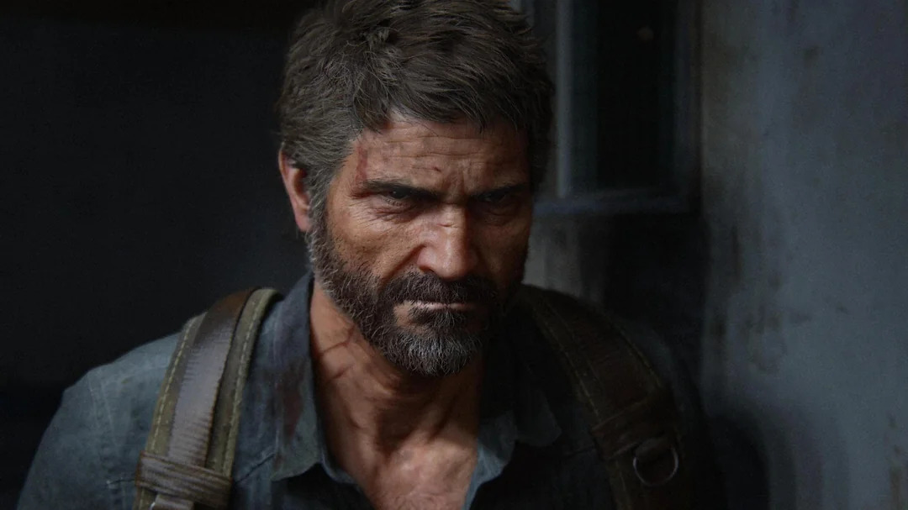
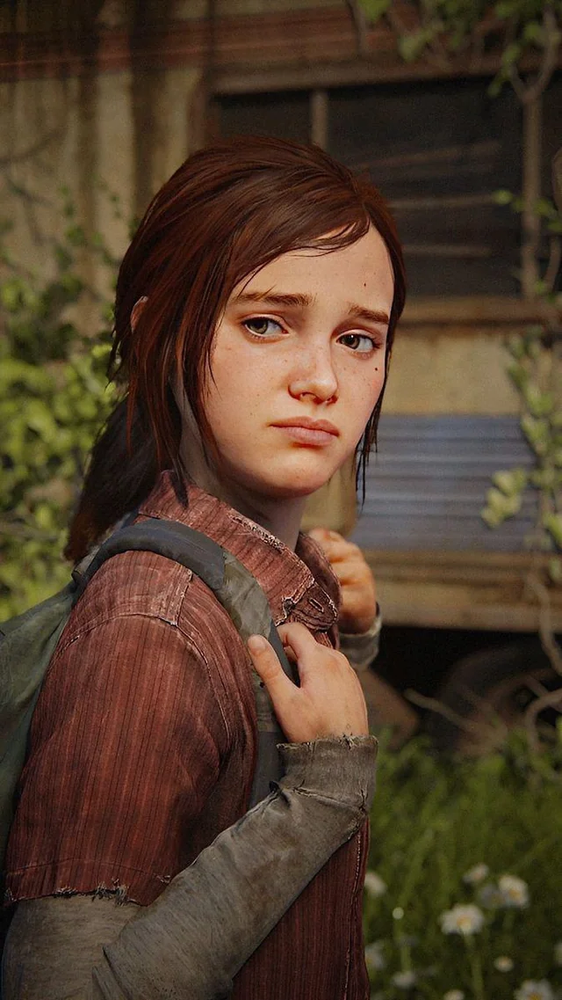
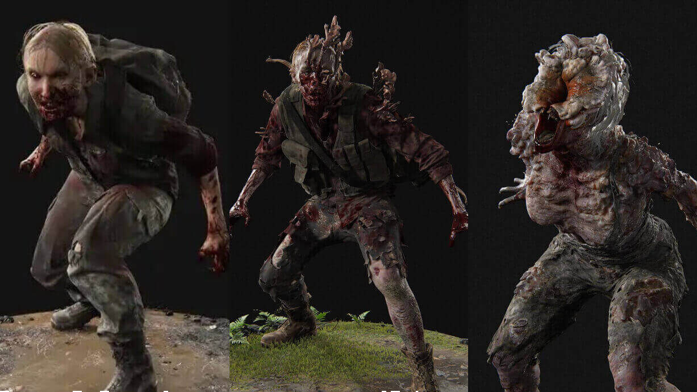

Joel Miller
Marcado por la pérdida y endurecido por un mundo post-pandémico, Joel navega la brutalidad del presente aferrado a un código de supervivencia personal y a los vínculos que juró proteger.

Marcado por la pérdida y endurecido por un mundo post-pandémico, Joel navega la brutalidad del presente aferrado a un código de supervivencia personal y a los vínculos que juró proteger.

Nacida en un mundo que ya estaba roto, Ellie posee una inmunidad única que la convierte en la clave para la salvación de la humanidad. Su carácter rebelde oculta una lealtad inquebrantable y una valentía forjada a través de la pérdida y la supervivencia.

Humanos consumidos por el hongo Cordyceps. Desde los frenéticos Corredores hasta los letales Chasqueadores, han perdido toda rastro de humanidad, convirtiéndose en cascarones agresivos que se guían por el sonido y el instinto asesino para propagar la infección.